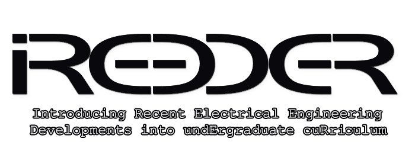

iREEDER

Introducing Recent Electrical Engineering
Developments into undErgraduate cuRriculum
http://ireeder.ahu.edu.jo
UCLan Cyprus participates to iREEDER project.
About iREEDER
Funding Authority: Erasmus+
Coordinator (PI): Al-Hussein Bin Talal University (Jordan)
UCLan Cyprus Staff:
- Dr Marios Raspopoulos (local PI)
- Dr Nearchos Paspallis
- Dr Stelios Ioannou
- Dr Josephina Antoniou
- Dr Eliana Stavrou
Partner Institutions:
- Al-Hussein Bin Talal University (Jordan)
- Mutah University (Jordan)
- Tafila Technical University (Jordan)
- Princess Sumaya University for Technology (Jordan)
- Philadelphia University (Jordan)
- Isra University (Jordan)
- Universita degli Studi di Trento (Italy)
- University of Central Lancashire, Cyprus (UCLan Cyprus)
- The University of Patras (Greece)
- Universidade De Vigo (Spain)
Project Budget: €768K
Timeline: November 2019 - November 2022
Project Objectives, Description and Impact
IREEDER is an Erasmus-plus funded project that aims at building the capacity of the higher education institutions in Jordan. IREEDER consortium includes ten partners; five Jordanian and five European partners, and led by Al-Hussein Bin Talal University (Jordan). The wider objective of the project is to ensure that Jordanian universities are placed in a position where they offer quality education compatible with European standards, and meet socio-economic needs of the emerging knowledge-based society by strengthening undergraduate teaching and enhancing learning outcomes in order to provide their Jordanian graduates with professional leadership skills that qualify them to meet market needs of the country. Specifically, the project aims at creating bachelor’s degree subjects with appropriate laboratories in Renewable Energy, Internet of Things and Cybersecurity taught by universities in Jordan and brought into line with the EU requirements, as well as engaging faculty in the development of online lectures and laboratory.
News
- 2019 Project launch (Jordan)
- 2021 Launch of local project webpage (Cyprus)
- 2021 IoT Workshop (July 22-28, 2021, Online)
- 2021 Upload of online videos (Cyprus)
Online Video Trainings
The full list of iREEDER-produced videos/trainings is available on the project's YouTube channel: https://www.youtube.com/channel/UCcgG7iZlZX9NKnlq4cNhqvw